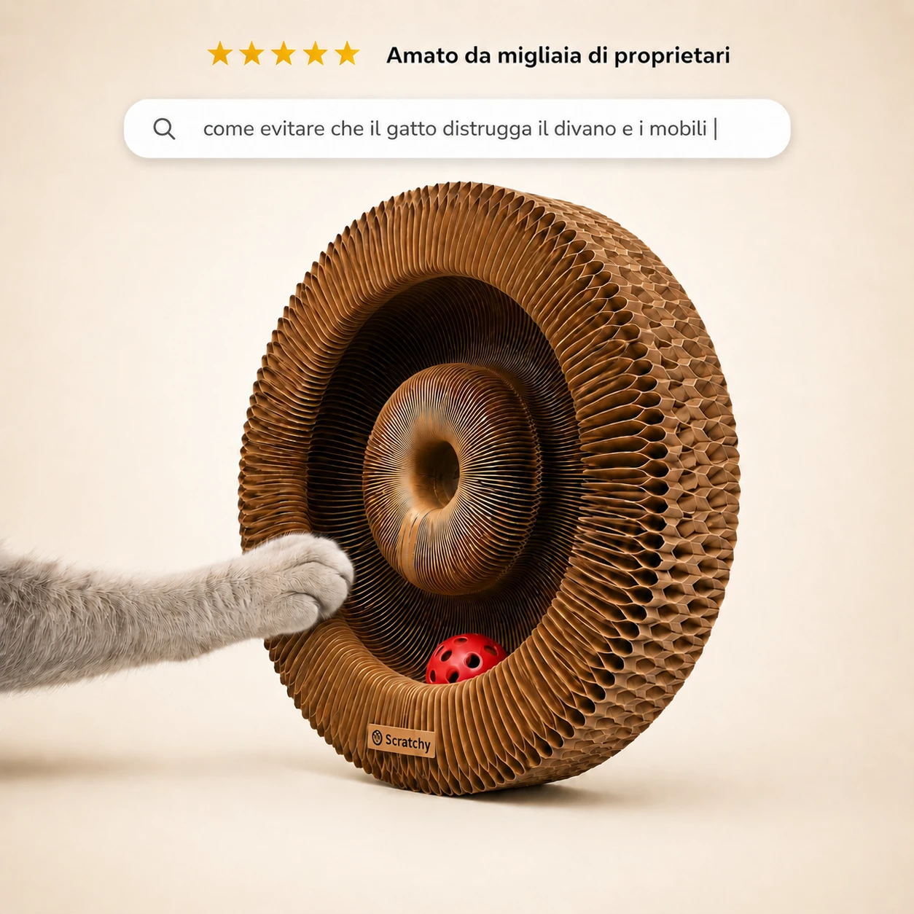

Non è cattiveria: al tuo gatto manca ciò che un appartamento non può dargli. Scratchy gli ridà l'istinto — e a te la pace in casa.
Provalo a casa tua senza rischi: se non vedi il tuo gatto stare meglio, ti restituiamo l'intero importo. Tutto il rischio è nostro, non tuo.
Hai comprato il tiragraffi. Hai provato i giochi. Gli hai dato più attenzioni. E ami il tuo gatto. Eppure qualcosa continua a non funzionare — e nessuno ti ha mai spiegato perché.
Il bracciolo del divano sfilacciato, i fili tirati, l'angolo della libreria graffiato a sangue. Non lo fa per dispetto: sta cercando di scaricare un istinto che non trova altra via.
Scatta nel buio, corre, salta, rovescia tutto. E tu ti svegli di colpo, un'altra volta. Non è gioco: è l'istinto di caccia che esce così, perché di giorno non ha trovato sfogo.
Quelle chiazze senza pelo sulle zampe e sulla pancia. Si lecca in modo ossessivo. È un nervosismo che rivolge contro sé stesso quando la tensione non ha dove andare.
Lo trovi fermo dietro la porta, immobile, con gli occhi nel vuoto. «È un gatto tranquillo», ti dici. Ma la calma non è sempre pace: a volte è solo un gatto che si è arreso.
Non hai sbagliato a provarci. Hai sbagliato bersaglio — senza saperlo.
Nessuna di queste cose ha fallito perché inutile. Hanno fallito perché curano il sintomo e lasciano intatta la causa.
Il tuo gatto resta un cacciatore: il suo cervello è fatto per ricevere circa 200 stimoli ogni ora. Una casa, anche la più curata, gliene dà circa 12.
La caccia ha una sequenza naturale — cercare, inseguire, catturare, mordere — ma in casa resta sempre a metà. Quell'istinto non trova sfogo e deve uscire in qualche modo: così va a finire sui mobili, esplode di notte, si rivolta contro il suo corpo, oppure lo spegne. Questa è l'Ipostimolazione Felina Cronica (IFC), cioè un gatto che riceve troppi pochi stimoli ogni giorno: è l'unica causa che lega insieme tutti e quattro i segnali.
E ora la cosa più importante: non è colpa tua. E non è colpa del tuo gatto.
È colpa di una casa che non è pensata per un cacciatore — e di nessuno che te l'avesse mai spiegato. Hai fatto tutto quello che ti avevano detto. Ti mancava solo questo.
SCRATCHY è il primo strumento di terapia ambientale pensato per far sfogare l'istinto di caccia in orizzontale, cioè per terra, dove il gatto graffia davvero. Tre passi semplici. Ogni gatto ha i suoi tempi — per questo hai 60 giorni per provarlo con calma, senza rischi.
Osservi il tuo gatto e riconosci i sintomi. Nessuno strumento necessario: solo guardare con occhi nuovi. Puoi iniziare oggi, prima che il pacco arrivi.
Posizioni SCRATCHY nelle zone chiave della casa. Il gatto comincia a sfogare lì il suo istinto, per terra, invece che sui mobili.
Il comportamento si riequilibra: le notti si calmano, i mobili respirano, il gatto torna sé stesso. Ogni gatto ha i suoi tempi — c'è chi cambia in pochi giorni, chi in qualche settimana.
L'istinto ha finalmente dove sfogarsi. Il divano smette di essere il bersaglio.
Le corse notturne si calmano quando di giorno l'istinto trova sfogo. Torni a dormire.
Non più teso, non più spento: un gatto che sfoga il suo istinto ed è in pace. Coi suoi tempi, senza forzature.
Quella che ha capito la causa e l'ha curata — non quella che rincorre il sintomo con l'ennesimo acquisto.
«Il mio gatto si svegliava ogni notte alle 4 e correva per casa. Dopo dieci giorni con SCRATCHY dorme — e io con lui. Non ci credevo.»
«Avevo provato tre tiragraffi diversi, tutti ignorati. Questo lo usa in orizzontale da solo. Il divano è salvo dopo due anni di battaglia.»
«Il mio gatto era diventato spento, stava fermo tutto il giorno. Ora caccia, gratta, è di nuovo vivo. Non immaginavo fosse questo il problema.»
Il metodo SCRATCHY si appoggia su fonti reali di comportamento felino:
Bradshaw, Cat Sense (2013) · Linee guida AAFP/ISFM (2013) · Mills (2013) · Wilbourn (2017) · Mikel Delgado, UC Davis. Il protocollo in 3 fasi e la Guida P.R.E.D.A. sono gli strumenti del metodo. SCRATCHY è una cornice di terapia ambientale ancorata a queste fonti, non un referto medico.
| SCRATCHY | Tiragraffi | Giochi | Diffusori | Più attenzioni | |
|---|---|---|---|---|---|
| Cura la causa (IFC) | |||||
| Scarica l'istinto in orizzontale | |||||
| Agisce su tutti e 4 i sintomi | |||||
| Risultati reali e duraturi | |||||
| Protocollo guidato incluso | |||||
| Garanzia 60 giorni |
Gli altri non hanno fallito perché cattivi. Hanno fallito perché curano il sintomo, mentre la causa resta.
Senza una via per scaricare l'istinto, i mobili continueranno a sfilacciarsi. Le notti resteranno spezzate. Il leccarsi non si fermerà. E quel senso di colpa — «sto sbagliando qualcosa» — resterà lì, ogni volta che lo guardi.
Oppure, col tempo, può essere tutto diverso — e hai 60 giorni per provarlo senza rischi: se non vedi il tuo gatto stare meglio, ti rimborsiamo. La causa è una sola, e c'è una cosa che la risolve.
Voglio aiutare il mio gatto Disponibilità limitata · 60 giorni per cambiare idea